Jiayi Su, PhD
Senior Algorithm Engineer at Farasis Energy. PhD in Electrical & Computer Engineering from Marquette University, advised by Dr. Edwin Yaz in the MACE Group.
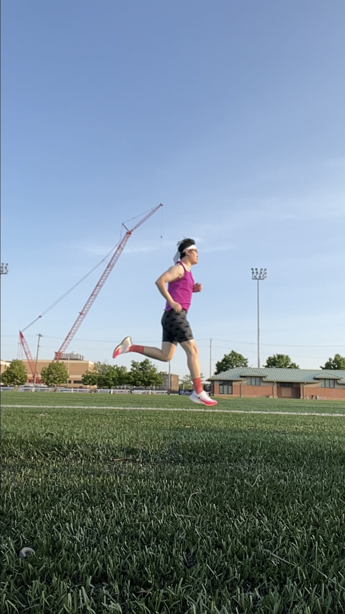
My research bridges deep learning–based computer vision (video analysis, multi-object tracking) and distributed estimation theory (SOC/SOH estimation, Kalman filter variants, multi-target tracking in sensor networks).
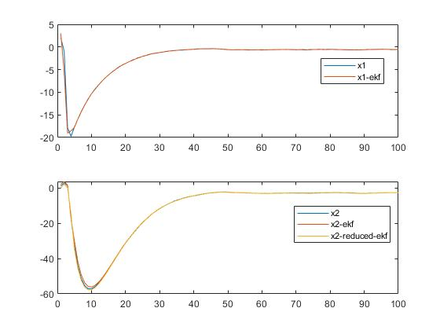
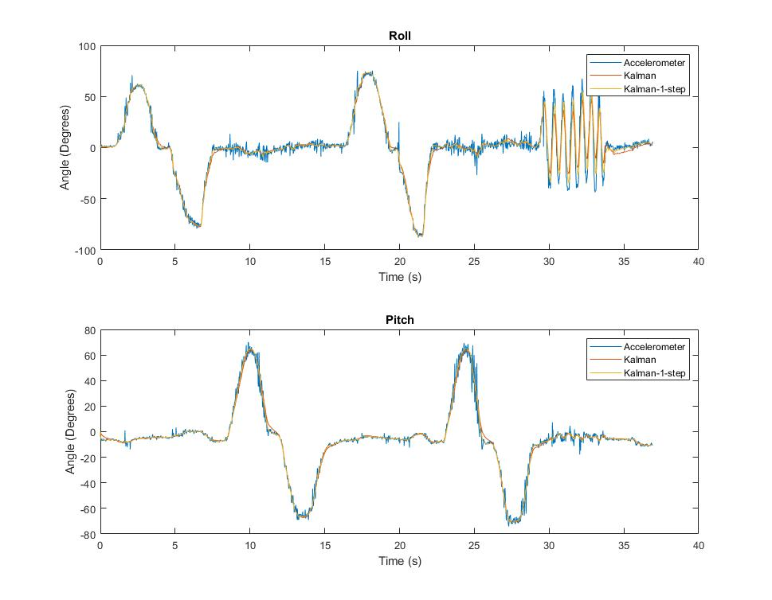
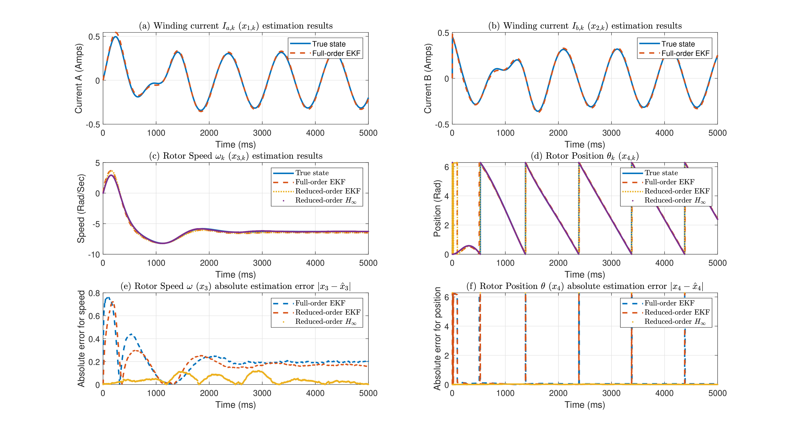
Abstract
A novel nonlinear reduced-order H∞ filter is introduced to estimate the speed and position of a two-phase PMSM with biased winding resistance, addressing modeling inaccuracies, temperature variations, and aging effects. Simulation results show robust estimation compared to both full- and reduced-order EKFs under model uncertainty.
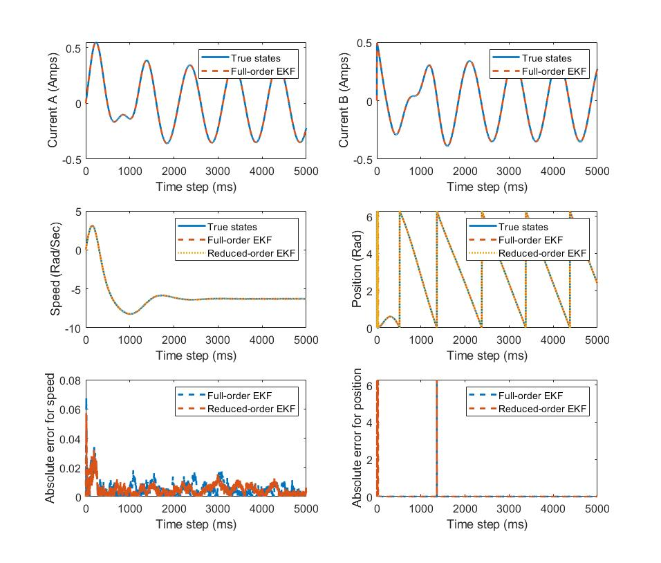
Abstract
A novel Reduced-order Extended Kalman Filter (ROEKF) for PMSM speed and position estimation that achieves equivalent accuracy to the full-order EKF while significantly reducing computation cost.
Abstract
Two efficient techniques for multi-object tracking: a realistic motion model improving tracking with no extra cost, and a reduced-order Kalman filter cutting computation while maintaining tracking accuracy. Competitive results on MOT benchmarks.
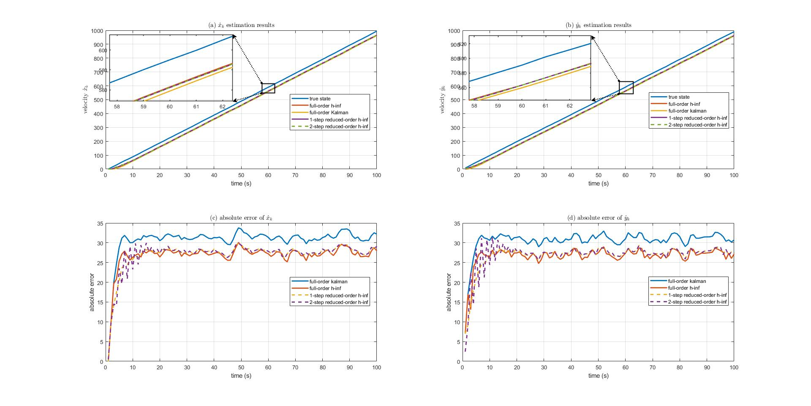
Abstract
A discrete-time reduced-order H∞ filter offering a compelling alternative to the full-order version with significantly reduced computation cost and similar estimation accuracy under biased process noise.

Abstract
3D CNN applied to violence detection in surveillance footage. A comprehensive hyperparameter study shows competitive results on three benchmark datasets, outperforming techniques designed specifically for violence detection.
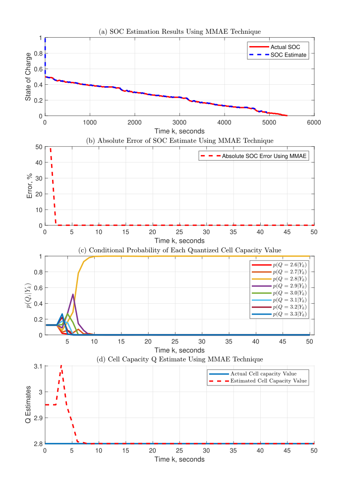
Abstract
MMAE technique for simultaneous SOC and total capacity estimation of LiFePO4 cells. Conditional probabilities over capacity values drive the state estimate, outperforming Joint and Dual estimation baselines.
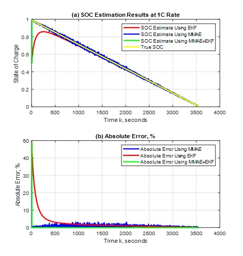
Abstract
MMAE + EKF combination for SOC estimation of LiFePO4 cells. The combined technique improves accuracy and avoids the individual drawbacks of MMAE or EKF alone.
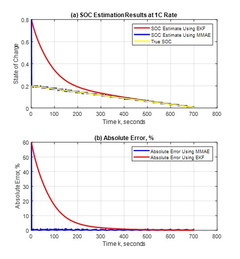
Abstract
Converts nonlinear SOC estimation into a parallel linear problem using MMAE with a bank of Kalman filters. Outperforms EKF alone on LiFePO4 simulation.
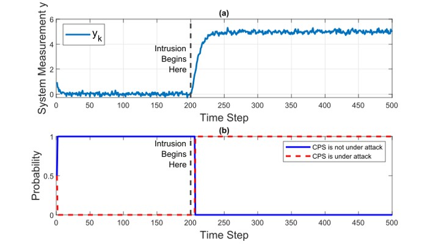
Abstract
Bank of Kalman filters detects sensor and actuator intrusions in CPS without knowledge of the intrusion type. Validated on a DC motor speed control simulation.
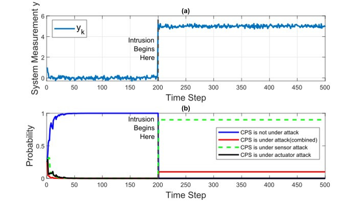
Abstract
Fading memory technique applied to the MME algorithm enables significantly faster detection of CPS sensor and actuator intrusion signals. Verified on a DC motor simulation.
- Matrix Cookbook
- ECE5550: Applied Kalman Filtering
- ECE5560: System Identification
- StatQuest (YouTube)
- Intro to Deep Learning — UW
- HPC Tutorial 1
- HPC Wiki
- ML/CV Cheat Sheet
- Exercises in Machine Learning
- PyTorch Wiki
- JupyterLab Docs
- Multi-Target Tracking (Python)
- AI: A Modern Approach
- Learning Ray
- Reduced-Order KF Derivation (PDF)
- Clustrmaps